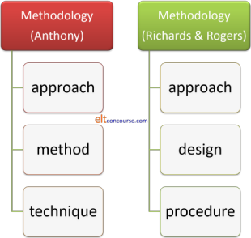

Methodology unpacked and refined
 |
| Methodology: a way of getting from here to there |
This guide reiterates some of the content of the essential guide to
methodology but then extends the analysis to refine the concepts and
make more links between principles and practice.
It is linked from the Delta index because much of what follows
bridges the links between a competent teacher and one whose practice
is firmly based on principle. Click
here to go back to the Delta
index.
If you have already followed the essential guide to methodology, click here to skip to what's new in this guide.
There are two common ways to define methodology in English Language Teaching and, graphically, this is how they look:

The left-hand set was developed by Anthony in 1963. The right-hand set was developed from Anthony's definition later and appears in Richards and Rogers, 2001. Briefly:
- Approach
- For Anthony, an approach was simply a
set of principles or ideas about the nature of language learning.
In his words:
An approach is axiomatic. It describes the nature of the subject matter to be taught
For Richards and Rogers it was similar but explicitly divided into theories of what language is and theories of how learning a foreign language happens.
The second of these definitions has the advantage of being quite explicit. - Method or Design
- In this section are lesson designs such as
Present–Practice–Produce or Test–Teach–Test. Those are not
methods, they are ways of structuring lessons within methods.
For Anthony, method described the plan for the presentation of language which is consistent with the approach.
Richards and Rogers' concept of design is somewhat broader and covers the practical implications in the classroom: syllabus design, activities and the roles of teachers and students.
These are not all that different but again, the latter one is more explicit. - Technique or Procedure
- Technique, for Anthony, was just any teaching trick or way
of doing something in the classroom such as eliciting,
approaching a reading text, encouraging authentic speaking,
drills and so on.
For Richards and Rogers, too, the term procedure refers to what we see happening in the classroom when a particular approach and design are implemented.
It actually doesn't matter all that much which breakdown you accept. Both are fairly arbitrary and subjective ways of breaking down a complex area.
 |
Methodology in practice |
It is worth pointing out that not all methodologies will fit
neatly into the categories above.
For example, Communicative Language Teaching, the current dominant
methodology, has a good theory of language but little to say
concerning a theory of learning. Some earlier methodologies
such as Situational Language Teaching were similarly deficient but
some, audio-lingualism, for example, had very clear theories both of
what language actually is and how people learn languages.
The extent to which, if at all, the various models and concepts of language and learning actually reflect the reality of classroom practices is, of course, quite another matter.
It is, however, often quite possible to work backwards from what is observed in the classroom (techniques and procedures) and deduce the approach a teacher favours (if any) or to work from the materials an institution uses (the method or design) to see what principles (the approach) the institution is favouring (if any). The Delta examination, e.g., explicitly asks you to do that.
 |
Methodology refined |
There are a number of provisos in the foregoing brief guide to what methodology is, including:
- It actually doesn't matter all that much which breakdown you accept.
- Both Antony's and Richard and Roger's ways of defining methodology are arbitrary and subjective.
- The extent to which, if at all, the various models and concepts of language and learning actually reflect reality is questionable.
- We should beware of techniques or procedures which
masquerade, or are falsely described, as methodologies.
For example:
- A PPP vs. a TTT approach to lesson design are not competing methodologies; they are ways of structuring a lesson and can exist happily within a variety of methods.
- Dictogloss is a technique, not even an approach and certainly not a method, as is any form of dictation.
- A noticing exercise is not a method, it's a procedure based on a hypothesis about learning.
The following is an attempt to refine our definition of method or methodology (the terms are used interchangeably in most texts) to make it:
- More precise and usable
- Less arbitrary and subjective
- Easier to apply principles to practice in a consistent fashion.
 |
A note on post-method methodology |
Beginning in the 1980s, there has been a movement away from
methodology altogether because any methodology was seen as an
inhibiting factor prescribing (and often proscribing) what was
allowable in the classroom.
There is a guide, elsewhere on this site, to post-method methodology
as it has come to be known and there you will find the following
criticisms of methodology restated on the left. On the right
are some counter arguments that have been suggested.
You may like to try to think of your own counter arguments before
clicking on
 to reveal some ideas.
to reveal some ideas.
| Criticism | Counter argument |
| There is a lack of any sound empirical evidence that any method
works any better than any other |
The evidence is
growing that some approaches are more effective. In
any case, if one only carried out classroom activities and
designed lessons based on those approaches for which there
is sound empirical evidence of effectiveness, there would be
almost nothing to draw on.
|
| The whole concept of method limits teachers and learners and
prevents them reaching their true potential |
Well, it does if
the methodology is applied unthinkingly and to the exclusion
of anything else. Part of the true potential of
teachers is, arguably, a principled approach to what they do
which they can articulate logically.
|
| Methods imposed on teachers and learners stifle creativity and
autonomy |
Maybe with some
methodologies, especially those based on imitation and
repetition, but within other approaches there is ample room
for creativity and innovation. That's part of being a
good teacher.
|
| There was a noticeable disenchantment with the idea that the
application of some kind of scientific method could have the
outcomes it promised |
This kind of
anti-technology / anti-theory argument isn't really an
argument at all. In fact, the world is littered with
devices based on sound scientific principles that work
extremely well. The fact that you are reading this is
evidence of more than one.
|
| Methods ignore the huge range of learners' needs, settings,
personalities and cultures |
Only if they are
applied unthinkingly and insensitively. More than one
method, so called, may be effective and we can choose the
one that fits the learners.
|
| Methods lead to disempowerment of both learners and teachers and
contribute to dominance by society's power holders and the
de-skilling of teachers |
Empowerment to
do what, exactly? If this means that teachers are free
to do anything that takes their fancy in the classroom,
where is the power of the learners? Teacher will only
be de-skilled if they are undertrained and training of the
best sort demands a critical understanding of principles.
|
While these criticisms are partially valid (in one view, taken
here), they are not the line taken because a post-method methodology
may easily have the effect of allowing teaching to drift into
unprincipled eclecticism with lessons and courses being designed on
the basis of what seems attractive and engaging rather than what
might actually help the learners acquire the targets they have had
set or set for themselves.
There is no suggestion here that materials, procedures, tasks and
lessons should not be designed to be attractive and engaging, just
that this is not all
they should be.
 |
Refining methodology |
We will start with the scheme set out by Richards and Rogers
although we could have used a range of other schemes with the same
effect. Their scheme, as we saw above, has just three levels:
Approach, Design and Procedure, akin to Anthony's Approach, Method
and Technique.
We'll have 5 levels and, as we shall see, that allows a good deal more
precision (at the cost of some blurred edges because that is what
you get when you try to draw lines on a continuum) and, crucially, allows
the principled application of theories and hypotheses about language
learning to the classroom.
Level 1: Major theories |
These are what both Anthony and Richards and Rogers refer to as Approaches and concern fundamental theories about:
- How learning happens
- What language is
Many people have made respectable academic careers from the study of either or, indeed, parts of either of these areas, so this is not the place to provide details of all the possible theories of learning and language that have been suggested. We'll look at some popular choices.
 |
How learning happens |
It will suffice here to point out four popular schools of thought
concerning how learning happens.
This does not refer explicitly to language learning (we have yet to
get to the next level) but all
learning – formal, informal and plain incidental.
- Behaviourism
- This theory rests on the premise that learning is mostly to
do with acquiring habits of thought and absorbing facts.
It is a theory of conditioning that makes no claims to consider
thoughts or feelings.
It can be summarised (as it is elsewhere on this site) like this:
Very briefly:
the process, which is known in the trade as operant conditioning, by the way, starts with a stimulus, say, a question from a teacher such
What is the formula for Ammonia?
The stimulus can elicit a variety of responses, including
Huh?
NO2
and
NH4
but only the right one will be reinforced. So, if the student responds with the third response that will be reinforced by the teacher's enthusiastic approval whereas the first two responses will be negatively reinforced by disapproval or silence.
Enough Stimulus > Response > Reinforcement cycles will see the habit instilled and the fact(s) acquired. - Cognitivism
- Cognitivism is based on the theory that conscious thought
and decision-making are essential to learning. In other
words, learning is not a process of acquiring facts and habitual
behaviours, it is a process of understanding.
It is also not an unconscious process.
A second thread to cognitivism is the assertion that people can integrate new knowledge into their current knowledge, hence building progressively greater understanding and ability. This is sometimes referred to as assimilation.
In this case, learning might happen something like this:
What is the formula for Ammonia?
Huh?
Well, we know it contains Nitrogen
NO2?
and it contains Hydrogen, doesn't it?
NH2?
Good. Now we need to get the valency right. Think about how many bonds Nitrogen can form with Hydrogen
Ah, NH4!
Right. Well done.
Within a cognitivist theory we find four major hypotheses concerning how cognition actually works: Active rule construction, Constructivism or Social interactionism, Connectionism and (rather less importantly) Connectivism.
All these will be considered below under hypotheses because they are situated within a generally cognitive overarching theory.
 |
What language is |
Where you come from determines where you go with theories of what
language is. Theories of language are of interest not only to
linguists and language teachers, they are also the concern of
archaeologists, anthropologists, evolutionary biologists and computer
program theorists among others.
There are two major strands of thought here and two subsidiary
strands:
- Language as a system

- If you view language as a system of lexemes, structures and
grammar, which it is, of course, then you will emphasise what
Chomsky refers to as competence (i.e., the language that in
theory can be formed) over performance (what people actually say
and write).
In other words, you will proceed from a structuralist theory of language.
In this realm, we will encounter grammarians, morphologists, phoneticians, lexicographers and a range of other specialists. A number of language guides on this site are also concerned with language, English in particular, as a system of interlocking structures.
We can also view language slightly differently as a hierarchy of elements from phonemes up through morphemes, words, phrases and clauses to sentences (which is where that analysis stops).
People who write huffy letters to newspapers complaining about bad grammar and poor lexical choice fall into this camp, too, as do language purists bemoaning what they see as the decline in standards and the baleful influences of other varieties of a language or other languages altogether.
More serious and informed people will investigate how languages grow adapt, change and develop, of course. - Language as a communicative mechanism

- If you view language as a way of communicating
ideas between people, which it is, of course, then you will
emphasise performance over competence. You will be taking
a communicative or ethnological approach.
Most theories of communicative competence will state that formal linguistic competence (the ability to produce well-formed utterances) is part of the ability to use language to communicate. The focus is, however, on functional grammar: what the grammatical structures actually mean.
The focus of analysis now shifts not to how something is said or written but to why, where and to whom it is directed.
The focus here, too, is on notions as well as the functions of speech acts.
Functional theories of grammar such as the one proposed by Halliday are in this realm too because of the emphasis which is placed on the Context of Situation: the Field or topic, the Tenor or relationships between users and the Mode or way the text is produced. For more on this, see the guide to genre, linked below.
In this realm, we find another zoo of specialists: psychologists, anthropologists, educationalists, ethnographers, functionalists, semanticists, interactionists and so on. - Language as a marker of identity

- Here you will find political theorists and psychologists as well as a few ethnographers and anthropologists. The view here, which does not compete with the first two views is that the language we speak confirms in part who we are or think we are. People have long reported that speaking another language makes them feel differently about themselves. Bi- and multi-lingual individuals, too, may hold views compatible with one language when they speak it but which are absent when they speak their alternate language(s).
- Language as a cultural artefact
- Here there's another group of specialists in anthropology,
ethnology, ethnography, typology and so on. The view here,
again, not incompatible with the previous three views, is that
language is a culturally formed system of meanings which determines
how we think about the world and is determined by the needs of
the society in which the language developed. This view is
taken by those approaching language from an ethnographical
tradition.
English speakers, for example, may need only one word to describe a yak but people for whom the animal is central to their lives and who depend upon its products may have many words to describe the same animal at various stages of development, of various appearances and either sex.
It doesn't stop with lexis, although that is where the system is most obvious, but can affect appropriacy and grammar as well as pronunciation.
 |
Linkage |
These views do not form either / or distinctions or necessarily
compete in a mutually exclusive manner. It is not in doubt
that language, any language, is a system of interlocking structures
and it is similarly not arguable that it is also a means of
communication. Those theories are simply two sides of the same
coin and holders of both views will usually agree that language is a
marker of identity and a culturally formed phenomenon. The
emphasis they place on each aspect will, however, vary
significantly.
Grammarians, for example, no longer stop as describing and
prescribing what is conventionally produced by native speakers but
are concerned, too, to explore subtleties of meaning and
communicative intention. Whereas once the distinction
between, for example:
John broke the glass
and
The glass was broken by John
would have been analysed purely as a grammatical form differences
(which was, for example, Chomsky's approach), the focus these days
is more likely to be on why and how the theme is shifted from
John to the glass and what communicative effect that
has.
There are two allied concepts:
- Usage:
which concerns the formal accuracy of grammar, lexis, morphology and phonology and concerns the significance of a piece of language. - Use:
which concerns the communicative function of a language items and focuses on its value.
For example, if the response to:
I've got a headache
is
Try taking an aspirin
and we analyse the dialogue, such as it is, in the form of
Initiation (informative, expressing a complaint) and Response
(preferred, making a suggestion) and the whole dialogue as an
example of a complaint-suggestion adjacency pair, then we are concerned with use
rather than usage.
If, however, we analyse the language of the first utterance as:
declarative mood statement with contraction of the main verb,
British English insertion of the past participle of get, a
determiner indefinite article and countable noun consisting of two
free morphemes
And we analyse the second utterance as:
a clause in the imperative mood
with a main verb followed by a verbal noun, an indefinite article
determiner and a mass noun made countable (ellipting the partitive
expression tablet of)
then we are analysing usage.
The distinction becomes rather clearer if the response is:
Avoid shooting a wine
which, unless we are dealing with a bizarre situation, has
significance (we know what it means) but no discernible
communicative value although the analysis of usage is parallel
(imperative + verbal noun + article + mass noun made countable with
ellipsis of a partitive).
There is, naturally enough, no barrier to using both types of
analysis simultaneously and, in the second case, searching for a
possible communicative function to do with shoot a wine.
That is, in fact, what teachers do all the time when they focus on
form, function and meaning in the same lesson.
 |
Level 2: Hypotheses |
Main hypotheses occupy part of what Richards and Rogers refer to
as Approaches as well as overlapping the category of Design
(Anthony's Approach and Method).
Under the consideration of cognitivist theory above, we referred to
four hypotheses concerning how the process of active thought may be
applied to learning.
This is where life gets a bit more interesting.
There are guides on this site, linked in the list of related guides
at the end, to all of these so a brief description of these
hypotheses is all that's needed here.
This list is not meant to be exhaustive and you can probably add to
it with a little research. It is also true that what in this
analysis will be placed in level three (the next stage down the
road) of the scheme will often be
elevated to this category, especially by those who see the
procedures as important.
The first four areas concern cognitivist theories of language
learning and some would elevate them to the major theories section,
above. However, because they are all hypotheses which are
cognitivist in nature, we will demote them here to this category.
There are rather too many of these hypotheses and there is a guide
on this site, linked below, which discusses the most important
ones. That guide covers behaviourist theories, cognitivist theories
and more.
Essentially, the split here is between those, like Krashen and TPR
enthusiasts who believe that second-language learning parallels
first-language acquisition and those who see it as a distinct
process.
One hypothesis, the first one, is actually a behaviourist theory of
learning and belongs as a subsection of that major theory of
learning.
Which hypothesis appeals will depend where one comes from at Level 1
on this scheme.
Behaviourists will have little time for active grammar construction
theorists, relying more on imitation and repetition theory but
cognitivists might conclude that language is learned through the
application of a mix of active grammar construction, connectionism
and social interaction. See below for what is meant by those
terms.
- Imitation theory

- This hypothesis underlies a good deal of classroom
procedures and many activities which involve modelling and
drilling (spoken and written). The learner's starting
point is:
I say what I hear; I write what I read.
The idea is that certain skills will become automatic and unconscious with enough repetition of their use so, for example, people's pronunciation will improve if they are presented with a good model and, through repetition and correction, come to an adequate approximation in their own production. In writing, too, the presentation of a model sentence whose form and structure the learners are required to duplicate using different phrases and lexemes is a form of imitation theory in action but may have elements of cognitive approaches because the learners are expected to perceive the patterns they are copying and may even have to analyse them in some way.
Behaviourists would add, naturally, that for imitation to work well, the correct behaviour needs to be reinforced so the operant conditioning can proceed. How reinforcement happens is a technique issue and can be a reward such as the teacher's approval or something less tangible such as the learner's own perceived success. - Active construction of rules

- The hypothesis suggests that people form working rules or
hypotheses based on the structure of the information they are
exposed to. In other words:
I make hypotheses about the language I am learning and refine them, discard them or make new ones as I encounter new data.
So, to continue the example above that we gave under cognitivism, a learner may have noted that hydrogen forms two bonds with oxygen and hence we arrive at the formula for water: H2O. Applied indiscriminately, this little fact will only work for elements of a certain valency so, later, the learner will need to refine the theory to account for elements of different valencies such as nitrogen and then be able to arrive at a correct formula based on a better theory. What has happened here is that the learner has used the data to refine a rule so that it applies more widely.
In terms of language learning this means that learners are also forming hypotheses based on the language they hear and read.
For example, having noted that we form a plural in English by the addition of -s or -es to the base form, many learners at early stages will produce womans before noting the restriction to the rule and refining their output accordingly.
In other words a working hypothesis will be applied indiscriminately and then later amended to account for exceptions.
This will also explain how the past of go may be correctly learned as went and then, once a learner has acquired a rule-based approach to forming past tenses, be changed to goed before the exceptions are noted and went is once more used.
This U-shaped learning curve (right-wrong-right) has been frequently observed as children acquire their first language. - Constructivism or Social Interactionist theory

- Constructivism or Social interactionism stresses social influences and consciousness.
Learning is, in other words, socially constructed through
discussion and interaction with others. The learner begins
from the premise that:
I use the rich data provided by interaction with others to learn to use language in a socially appropriate manner.
In terms of language learning, we use the language we have mastered (at least partially) and note the responses and reactions of others, refining or amending our own production to match what others do (imitation, in other words) or to make what we say and write more effective on the basis of the social feedback we get.
We can use our own or others' experiences to enhance the process of learning and thereby gain greater knowledge and insight into the world around us.
Those wedded to a fully communicative theory of language will emphasise social interaction theories over any others and may attempt to manipulate the classroom setting to encourage this form of learning (Dogme approaches spring to mind). - Connectionism
- Connectionism is a theory which focuses on humans' ability
to see patterns in data. The learner's starting point is:
My brain makes new neural networks responding to the statistical likelihood of something being correct.
It has been suggested that humans make neural connections in the brain based on the frequency of what they hear rather than making rules based on the structure of what they hear. In this way it differs from the Active construction of rules hypothesis because, instead of forming and applying a rule, the learner will estimate the chances of a form or functional realisation being correct on the basis of statistical likelihood.
It explains, for example, why many people will suggest that the past tense of the nonsense verb fring would be frang rather than fringed because they are not drawing on a rule they have internalised but are operating statistically on the likelihood of something being parallel to another form (quite possibly ring or sing, in this case) which they already know.
It also explains why people suggest that the plural of frouse will be frice not frouses. - Connectivism

- Connectivism is somewhat more recent and is not, yet, a
full-blown hypothesis concerning learning, let alone a theory.
It suggests, in essence, that it is partially what you are doing now, using the internet and other digital resources to learn.
The theory asserts that new technologies have created new opportunities so people can now share, research and exchange views in ways that were not possible before. It is, in these terms, a qualitative rather than simply quantitative change to the way learning happens.
Technologies, including websites such as this one, online discussion forums, wikis and social networks, may all be involved.
MOOCs (Massive Open Online Courses) are a good examples of connectivist theory in action.
You will not be the first to point out that connectivism and constructivism are more or less the same thing in different settings insofar as they both require collaborative action on the part of the learners.
Connectivism should not be confused with connectionist theory. - Motivation

- There is a range of theories of motivation as a short web
search will reveal. For the purposes of language teaching,
two have been preferred.
Gardner and Lambert (1972) proposed four sorts of motivation concerning language learning:- Instrumental motivation: learning a language to gain another goal
- Integrative motivation: learning a language to integrate into a culture
- Intrinsic motivation: learning a language for the fun of it and personal satisfaction
- Extrinsic motivation: learning a language under external duress in hope of a reward or under the threat of a sanction
Vroom (1964) proposes three factors which together are a measure of motivation (this is called Expectancy Theory):- Valence: the value attached to an outcome: how strong is the learner's need to acquire the knowledge?
- Expectancy: the individual's perceived ability to achieve the goals set: how strongly do the learners rate their own ability?
- Instrumentality: the likelihood that the effort will be rewarded with a successful outcome: how strongly do the learners feel that what they are asked to do will be successful and effective?
- Acquisition vs. learning and Input + 1

- Both of these hypotheses are linked to the name of Krashen.
- Krashen distinguishes learning, which is a formal, classroom-based
endeavour focused on form and accuracy, with acquisition, which
is an
informal, unconscious process similar to the way in which
children acquire their first language(s).
Krashen also posited the idea that what is required for acquisition (or learning) to take place is that the input a learner receives for optimum effect should be a) comprehensible and b) just above the level of the learner.
For more, see the link to the guide at the end.
If either of these hypotheses is correct, then they are particularly relevant to those whose adherence is to a theory of learning which is constructivist, emphasising the social nature of language acquisition / learning. The hypotheses will not be relevant to those approaching from a purely cognitive or behaviourist position. - Interlanguage
- You will also find this concept referred to as a learner's
approximative system.
The analysis of learners' errors starts with seminal work by Pit Corder (1981) who set out to investigate how the errors that learners make reflect their internal mental processes.
The key concept is interlanguage, concerning where the learner's current knowledge lies somewhere on a continuum from knowing nothing about the target language to full mastery.
What studies showed was that although some errors were the result of applying first-language rules to the target language (which would indicate the transfer of language habits), some errors indicated that learners were creatively constructing rules and hypotheses to explain the data to which they were exposed (which would indicate an active construction of grammar approach).
The conclusion is that we should address the positive role of error and ensure an adequate supply of data for the learners' cognitive processes to work on.
The concept of interlanguage is relevant for those who take a cognitive view of language learning but anathema to those whose view a behaviourist or audio-lingual view and are constrained thereby to avoid error at all costs. It is particularly relevant to Active construction of grammar and Connectionist hypotheses because Pit Corder's data seem to back up the idea that some errors are caused by overgeneralising a rule which needs refining and limiting or by assuming that one language structure will be analogous to one the learner already knows.
For more, see the links below. - Zone of Proximal Development

- This is an important hypothesis but one not tied to
any single overarching theory of learning or language.
The hypothesis is that learning can only be effective when the
learner is operating in a narrow band of challenge in which
tasks are not too easy (and so no help is needed and no progress
is made) or too difficult (where too much help is required to
make any progress at all and the learner is overwhelmed by too
much data). Between these zones, lies the one concerned
with proximal development, i.e., almost mastering the
data but needing a little help from someone more knowledgeable
(the teacher, a peer or the materials).
Audio-lingual approaches, based on a behaviourist theory of learning will ensure this by a strict structural syllabus in which incremental small steps are made as the language resources of the learners grow.
Cognitivists of whichever stripe will try to ensure this by leading learners to refine hypotheses based on small but finely targeted amounts of new data and so on.
All these important hypotheses are related to which overall theory of learning and language one adopts. That's why, in this scheme, they are described as level 2 hypotheses.
 |
The story so far |
We can summarise the story so far like this but we should bear in
mind that any diagram of this sort will disguise cross-overs between
theories and overlapping concepts.
It is the case, for example, that one can take a structuralist view
of language as a hierarchy of elements but still employ a
cognitivist rather than behaviourist approach. It is also the
case that one may assume that learning is based on social
interactions but still use a good deal of repetition and drilling in
an effort to make language form automatic and easier to deploy in
interactions. Many proponents of a communicative view of
language will still spend a good deal of time focusing on grammar in
the context of its functional value.
Nothing is forbidden but some mixtures will be internally
contradictory.
If you would like to try two little matching tests concerning these theories and hypotheses, click here.
Level 3: Procedures |
There is some overlap here between Richards and Rogers
identification of Design and Procedure (and Anthony's Method and
Technique). However, this category
lies, in this scheme, above the level of technique but below the
level of the hypotheses about learning and language we have just
encountered.
There are five of these major procedures to consider (although more
could be added depending on your personal preferences for raising
techniques above their station).
- Noticing

- There is a guide to noticing on this site, linked below.
Briefly:
Noticing is an individual cognitive process (so those coming from a social constructivist, or behaviourist position will have less use for the idea). It is also a procedure which depends on active discovery of language (so acquisition theorists will not have much time for it).
The essence is that learners need to have their attention drawn to specific features of the language so they can notice either how the language works or how their own productions differs from, and is probably inferior to, a native-speaker model (or near offer). In other words, noticing the language and noticing the gap.
Only when features have been noticed, the idea is, will the learner be able to apply a cognitive process of constructing or amending mental pictures of how the target language works so noticing procedures fit well with cognitivist theories such as active construction of grammar but less well with social interaction theories which focus more on communicative appropriacy.
A minor facet of noticing procedures is problematising an issue. Part of noticing, it can be argued, is noticing that something is worth noticing. Raising an issue and suggesting that it may be a problem for the learners is, therefore, a way of leading the learners to notice features they previously were unaware of. - Inferring

- This is about as far as one can get from a behaviourist
approach in which inferring (or guessing) is not allowable
because it will necessarily lead to error.
The idea of inferring meaning or structure from the data that are presented does, however, sit well with a cognitivist view of learning and a communicative (use-based) view of language. The former because it depends on a mental process of deduction and inspired guesswork, the latter because it depends on the assumption that what is being said or written has some communicative message to relay. Figuring out what that is is a combination of cognitive processing with a communicative task. - Scaffolding

- This is more than helping or assisting as the guide to it
tries to make clear. It is inextricably linked to the idea
of the Zone of Proximal Development because it is here that the
teacher can engage the learner(s) in recognising the usefulness
of targets, maintaining interest in their acquisition and
supplying just enough help, but no more, for them to be able to
achieve a task.
Motivation is a key idea here, too, because scaffolding has to be more helpful than supplying answers and more useful and acceptable than simply working alone to puzzle something out.
There is a guide, linked below, to scaffolding and the ZPD. - Input and Intake

- Cognitivists will have a lot to say about the ways in which
input is converted to intake (and, eventually, output) through a
process of engaging attention, lodging the item in short-term
memory and then working on it in order that it can find its
place in the long-term memory store.
It is also not an idea that behaviourist theories will have much trouble with because underlying an audio-lingual approach is a process of drawing the learners' attention to a language item and, through a combination of imitation and repetition (rehearsal and retrieval is another ways of saying that) lodging the data in the learners' long-term memories, ready to be retrieved and produced as the occasion arises for it.
Those who adhere to the distinction between learning and acquisition may also feel that an input-intake procedure is efficacious because acquisition occurs when the learner is focused on meaning rather than form and attending to what is heard or seen in some way. - Structuring lessons

- How lessons are structured is not, or at least should not
be, a random exercise intended only to inject variety into a
teaching programme.
For example, a Test–Teach–Test (TTT) approach may be just the ticket for a class of learners who need to notice the gaps in their own ability and be able to polish and refine their production in the second test phase.
A task-based (TBL) approach to a lesson will fit well with a constructivist view of language learning because it usually demands a good deal of collaboration and interaction. Such a lesson may be less useful, from a cognitivist point of view, because the accomplishment of the task is the motivating factor and the vehicle for learning which leaves too little space, arguably, for the learners' cognitive processes to function at the optimum level where analysis of language and skills is at a premium.
A behaviourist would not be in favour of either a Task-Based or a Test–Teach–Test approach because the fundamental assumption is that the learners need to see the targets, repeat them and then produce them in a controlled manner so there is little or no point in asking people to use language they do not fully grasp because error is inevitable. For them a Present–Practise–Produce (PPP) structure is more likely to seem the way forward.
One the other hand, a PPP approach would not sit well with theories of social constructivist learning of language because there is little that can be called social construction in the presentation phase of such a lesson and by the time it comes to the production phase, it is too late.
There's a little more on how lessons may be constructed in the guide linked below. - Inductive and deductive approaches to tasks
- This distinction could well be regarded as a hypothesis and
categorised there but, because the processes are easy enough to
demonstrate and apply, we'll place the approaches in the
category of procedure. (The words process and
procedure share a Latin root in processus, going
forward although the latter comes to us from French not
Latin directly.)
Briefly, inductive processing of data involves figuring out a rule from examples of it is action so, for example, having been shown:
1 fish, 2 fishes, 1 apple, 2 apples, 1 car, 2 cars, 1 match, a box of matches, 1 cigarette, 20 cigarettes, 1 speaker, 3 speakers
and so on, a learner may arrive at a rule for forming plurals with words ending in -e, those ending in consonants and those ending in certain consonant sounds such as /ʃ/ and /tʃ/.
A deductive approach involves being told the rule or having figured out the rule inductively, a learner can then proceed to apply it to a more examples, such as:
clash, chair, bunch, table
etc. and arrive at the correct forms.
This could be extended, of course, to giving the learner examples of how the words are pronounced (ending in /z/ or /ɪz/) and getting them firstly to induce the rule and then apply it, deductively, to further examples.
In order for inductive learning to happen, many insist on combining the procedure with some kind of noticing task, highlighting the feature that the learner should use to form the rule.
Much nonsense is spoken about taking either an inductive or a deductive approach to learning. This is not an either-or distinction. Even if one starts with a purely inductive approach in the classroom, the aim has to be for the learners to hypothesise a rule (preferably the right one) and then apply it to further examples of the target language. The second procedure is, of course, purely deductive. There is little point in putting learners to the trouble of constructing a rule from exemplification if they are not then encouraged to apply it.
On the other hand, starting with a deductive approach and supplying a rule from the outset nearly always results in the need to refine the rule later to take account of more complex forms. Even if we knew what they are, it would not be possible to supply all the rules for using, say, verb tenses in English so any rule which is presented to learners has to be no more than an approximation or a working hypothesis, if you prefer.
The situation looks like this:

and nobody knows what's in the outer ring, no matter how confident and sure they may sound.
If you would like to try a little matching test concerning these procedures, click here.
 |
Level 4: Techniques |
This area and the next are parts of what Richards and Rogers call
Procedure and Anthony refers to as Techniques but this scheme recognises two levels of Technique:
multi-purpose techniques and classroom-based solutions to specific
issues or language or skills.
Whether you place certain techniques in this category or the next is
slightly arbitrary because it depends to an extent on what you are
using the techniques for and how they are linked to your view of
levels 1 to 3 above.
However, here's a possible list of Level 4 techniques which can be
applied to a range of issues and lodged within grander and more
overarching theories, hypotheses and procedures.
- Dictation

- Most dictation techniques are most closely aligned to some kind
of cognitive approach because writing down what you hear (as you
hear it traditionally or later by reconstructing it in various Dictogloss techniques)
involves the application of deduction and inference, both
high-level cognitive processes.
Such a technique needs to be adapted to fit with a constructivist theory to allow collaboration and texts need to be carefully designed if they are to fall into the optimum ZPD and contribute to incremental progress in the learners' interlanguage.
Even in an audio-lingual, behaviourist approach such techniques may be useful providing reinforcement through successful completion if a simple enough text is used.
Social interaction theorists will have little time for this technique unless it is adapted to be a mutual support task because it focuses on form rather than appropriate communication strategies. - Elicitation, questioning and IRF (Initiation, Response and
Follow-up) sequences

- These sorts of techniques usually involve leading a learner to the right answer by careful
questioning and listening hard to the responses.
Anathematic to behaviourist approaches for the most part, because it involves responses to learner error, such a technique fits well with ideas of scaffolding and noticing as well as the application of a cognitive approach.
IRF sequences are meat and drink to social interaction theorists because they focus on appropriate ways of providing initiations, acceptable response forms and ways of maintaining social interactions. - Error

- It is noted elsewhere on this site that one's approach to
handling error depends largely on one's understanding of the
learning process. The existence of error is a sign of
failure in audio-lingual approaches but an opportunity for
scaffolding and hypothesis building in a cognitivist approach.
In the first case, error will either be ignored, disparaged or briefly corrected (and never emphasised or used as a focus point) but in the second errors will be expected and used as a valuable source of noticing, problematising and an opportunity for the refinement and upgrading of the learners' output. - Communicative vs. form-focused activities

- How these are designed and whether they are used will largely
depend on whether the emphasis lies on a structuralist approach
to language or an interactionist / communicative view. The
latter will focus (or should) on use and the former on usage.
They can be combined in a lesson but mixing them up in a single activity is perilous because it is extremely cognitively challenging to focus simultaneously on successful message transmission and the form of the message.. - Skills

- If one takes a robustly structural view of language, skills work
will not represent a large proportion of lessons. However,
the combination of a functional and a structural view of
language, as in a genre approach, may pay dividends in getting
the best of both worlds. It involves, therefore, a
systematic approach to skills work rather than confining skills
and systems to their own sealed compartments. And a
systematic approach to skills work implies teaching the skills,
not merely providing an opportunity to practise the skills.
Much skills work is premised on an unproven (and often unstated) hypothesis that language learners, being foreigners, poor things, are unable to apply reading, listening, speaking and writing skills that they routinely use in their first languages to working with a foreign or additional language. - Monitoring
- As the guide to monitoring states, People are often told to monitor but rarely told how and when. What a teacher is doing when monitoring will depend a good deal on what that teacher understands the learning process to be. If the concern is to identify and immediately correct language errors before they become embedded, the approach is audio-lingual. If the monitoring is concerned to scaffold learners' efforts and help them arrive at better and more refined hypotheses about language and skills use, then the concern is more with cognitive learning theories.
- Feedback

- How feedback is given and what is elicited from the learners will betray a good deal about where the teaching is coming from. The focus may be on form, on task achievement, on gauging interlanguage level, on communicative success or on how well collaborative procedures have functioned and all of these will reflect some of the major theories and hypotheses covered in this summary.
If you would like to try a little matching test concerning these techniques, click here.
Level 5: Solutions |
This is what Richards and Rogers mean when they identify as Procedure what we see happening in the classroom when an approach and design are implemented.
We reserve this area for classroom-specific solutions to
issues that arise.
These solutions are not, however, selected at random because
overarching theories and hypotheses to which the teacher adheres (or
which seem reasonable) will affect which solutions are deemed
appropriate.
For example, someone coming from a cognitivist view of learning may
well use task design in a way that forces learners to operate
inductively and one whose overriding interest is in meaning before
form will deploy considerably more concept checking than someone who
is more interested in form than meaning.
All of these and more are affected by where the teacher is coming
from and how he or she sees language and language learning:
|
|
 |
The Summary |
Here is all of the above in a handy cut-out-and-keep form:
 |
The Morals |
- There should not be randomness.
- Hypotheses should be evaluated against your own experience and your own view of how languages are learned and what they are, not quietly accepted.
- Procedures should be consistently based on theories and hypotheses, not chosen at random because they just might 'work'.
- Techniques should be chosen that fit the targets and comply with the accepted hypotheses (whichever you choose, after some critical thought, to accept).
- Classroom solutions should bear in mind how you think people learn and what you think language is.
Much more is available by following the links below.
| the history and development of ELT | which includes a review of some Level 1 ideas and a good deal more |
| first- and second-language acquisition | which considers differences and similarities |
| post-method methodology | for a consideration of why and how some have rejected the concept of methodology altogether |
| language, thought and culture | for some consideration of how methodology may be influenced by theories concerning the connection between thought, language and culture |
| second-language acquisition theories | which looks at how second languages are learned or acquired |
| motivation | for the guide to a second-level hypothesis or three |
| Krashen and the natural approach | for the guide including Input + 1 and the learning / acquisition distinction |
| interlanguage | for the section of the guide to L2 acquisition which specifically focuses on this concept |
| noticing | for the guide to a key Level 3 procedure |
| inferencing | how it's done and why with an emphasis on skills work |
| scaffolding and the ZPD | for the guide to intertwined ideas |
| input and intake | for the guide to what makes the first the second |
| structuring lessons | for the guide in the initial plus section setting out some major procedural options |
| some dictation techniques | for the development guide which considers various forms of dictation |
| questioning | for the initial plus guide to asking good questions |
| error | for the guide to what it is, why it happens, what causes it and how to treat it |
| genre approach | which takes a functional systematic view of language |
| monitoring | for the guide to what you should, or could be doing when working with the learners |
| feedback | for the guide to giving and getting feedback |
| how learning happens | which covers some learning theory |
| unlocking learning | this guide lives in the Delta section and considers some practical implications of hypotheses about learning |
References:
Anthony, EM, 1963, Approach,
Method, and Technique, ELT Journal (2): 63–67, Oxford: Oxford
University Press
Corder, SP, 1981, Error analysis and interlanguage, Oxford:
Oxford University Press
Gardner, RC, & Lambert, WE, 1972, Attitudes and motivation in
second language learning, Rowley, MA: Newbury House
Krashen, S, 2002, Second Language Acquisition and Second Language
Learning, First internet edition, retrieved from
http://www.sdkrashen.com/content/books/sl_acquisition_and_learning.pdf
Richards, J, and Rodgers, T, 2001, Approaches and Methods in
Language Teaching, Cambridge: Cambridge University Press
Schmidt, R, 1990, The role of consciousness in second language
learning, Applied Linguistics 11: 129-158
Skinner, BF, 1948, Verbal Behavior,
retrieved from http://www.behavior.org/resources/595.pdf
Tsui, ABM, 1994, English
Conversation, Oxford: Oxford University Press
Vroom, VH, 1964, Work and Motivation, New York: McGraw Hill
Widdowson, HG, 1978, Teaching Language as Communication,
London: Oxford University Press
and a whole lot more.